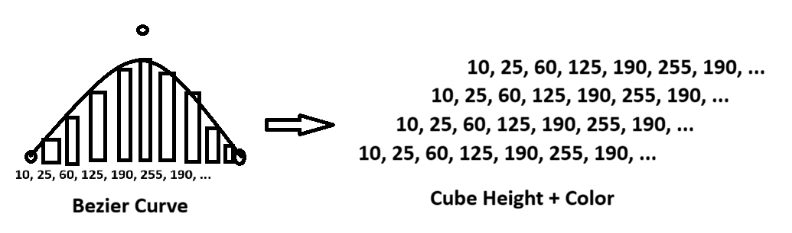
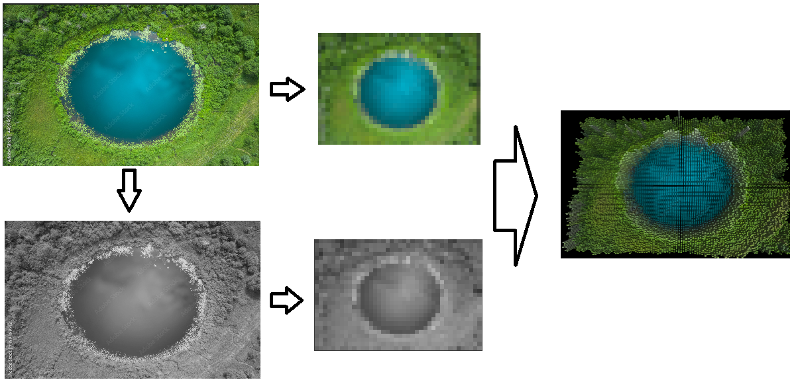
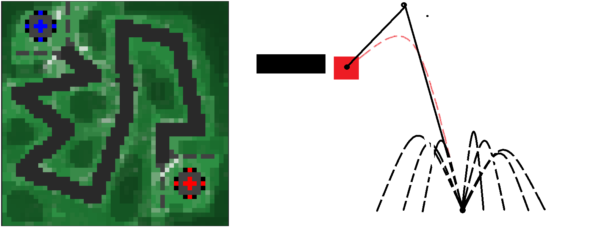
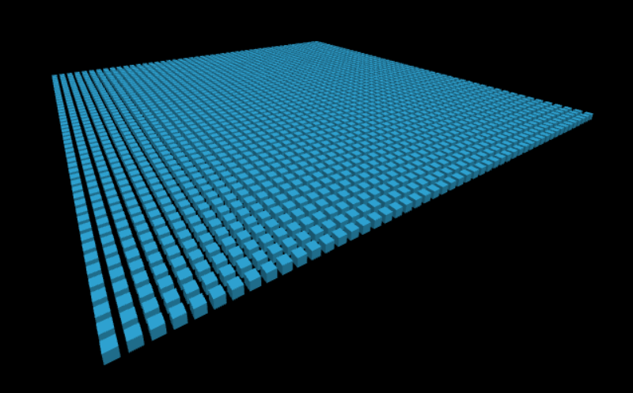
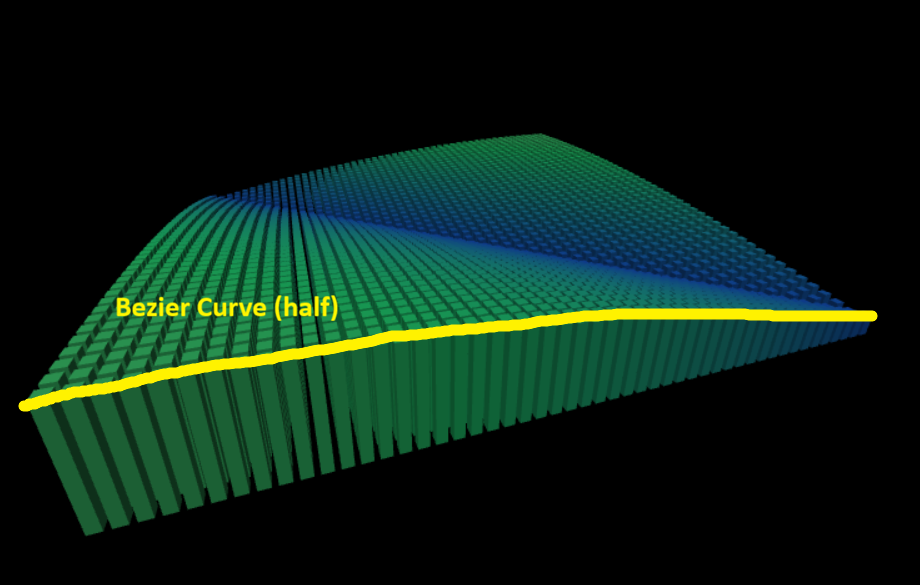
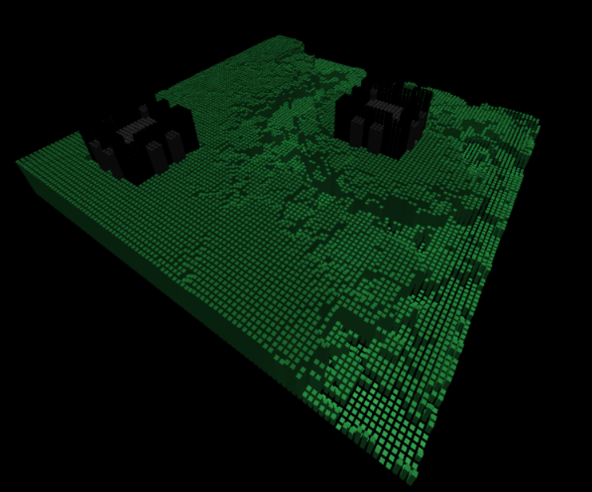
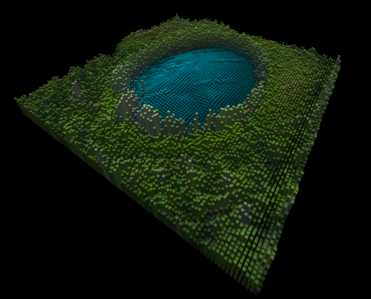
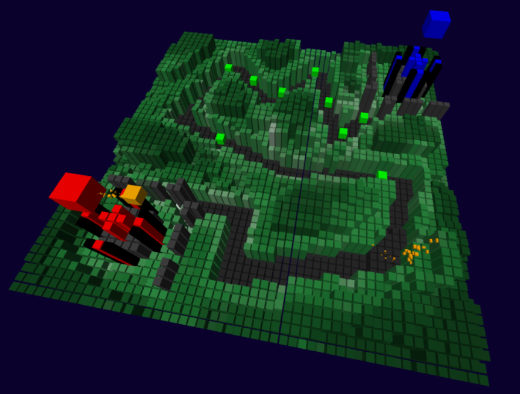
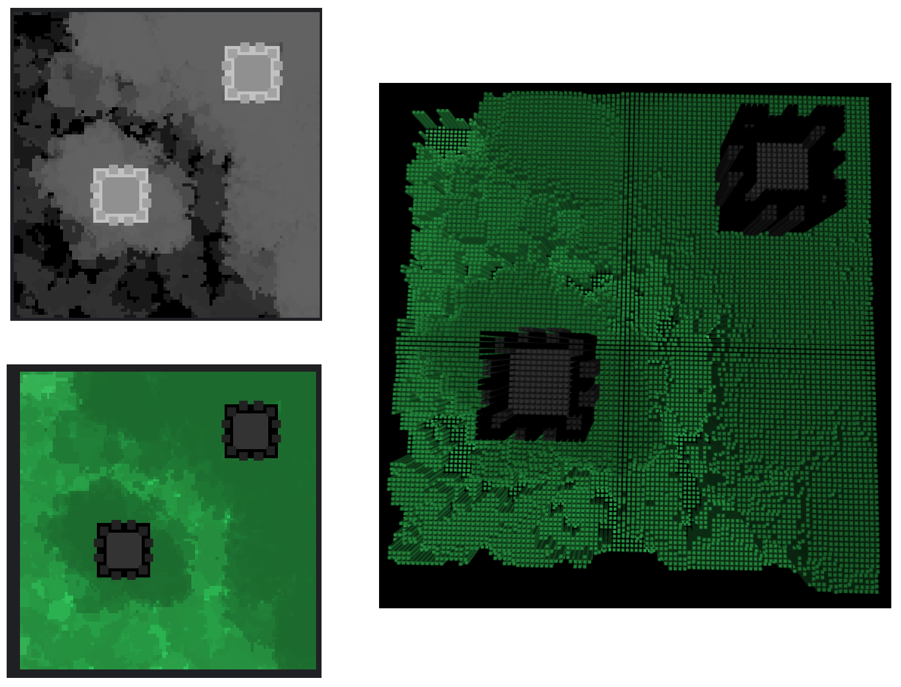
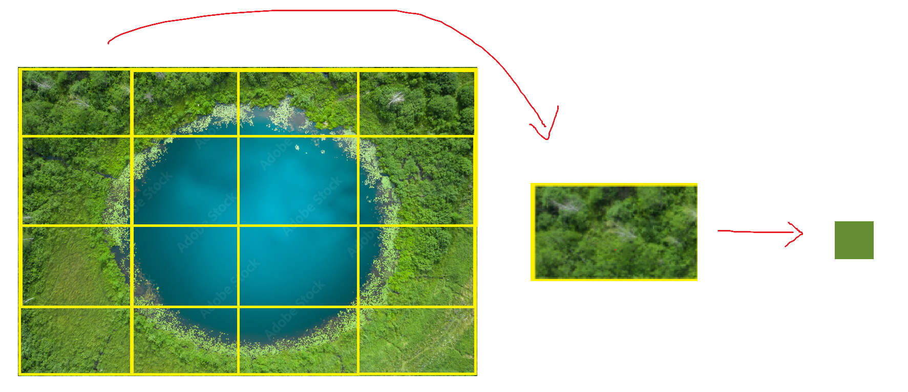

Documentation
Design
- Level 1B

- Level 2

- Level 3

Detail
The final source code consists of 4 levels: 1A, 1B, 2, and 3:
- Level 1A is simply a grid of 50x50 cubes on the ground.

- Level 1B also has a grid of 50x50 cubes, with varying height overtime. The height of these cube
follow a quadratic bezier curve function on the x axis, and a small delay on the y axis, creating a diagonal
wave effect.

- Level 2 is a slightly modified version of 1B, with a grid of 100x100, and extra function that allow it to
load an image to be used as a color map, as well as a height map for the cubes.
The level has 3 default images with depth map to choose from, but users can also upload their own images, in which
case the depth map is the same as the color map uploaded.


- Level 3 is a separate advanced level in 50x50 grid. The level, unlike other, use instanced rendering, and
consist of a tower defense-like game scene, where a lot of objects and particles are spawned using diverse
cube size and bezier curves.

- The supposed Level 4 was encapsulated in Level 3.
For Level 1B, 2, and 3:
- Hold Mouse and move left/right to rotate the camera around the scene.
- Hold Mouse and move up/down to move the camera up/down.
- Use the mouse wheel to zoom in/out.
- (The camera always points at point 0,0,0.)
Implementation
Shader: Level 1A, 1B, and 2 used the default shaders given by the assignment, however, level 3 used
custom shaders to support instanced rendering (through ANGLE_instanced_arrays, a WebGL extension):
- Vertex Shader: Multiple per-instance data are added to the source, allowing each instance to have its own
position, scale, color, and other attributes, while still being rendered all at once.
Slight change to worldPosition calculation to account for scaling.
- Fragment Shader: Color is changed to 'varying' to support per-instance colors.
- Instance: An extra part of the shader include instance setup, majority of which
are done to add a uniform buffer of per-instance data to the WebGL object.
By doing this, all instances can be rendered in a single draw call, while each instance
can still have its own attributes (for this project, these include position, scaling, and color,
all in a 3D vector, for a total of 9 floats per instance).
Depth, Color, and Design Application: An 'image map' system was used to apply depth, color, and design to the
entire cubes surface grids for all levels (except 1A) for uniformity. This allows all levels to use somewhat the same
loading system, making map design and coding easier after the 1st time.
More specifically, ImageData was used to read the pixel values from each image, which was extracted by drawing images on a
canvas and using canvas.getImageData().
- Depth Map: Used to determine the height of each cube in the grid (white is highest). By default,
the depth map used the same image as the color map, making the cube heights vary based on the image. This does have a limitation,
as it means the depth and color information cannot be controlled independently. Level 2 and 3's base setup do include a height map,
which avoids this problem, but the upload functionality of Level 2 does not support uploading a separate height map, making some
interesting depth decisions for some images (such as a lake with the water higher than the surrounding land).
- Color Map: Applied to the surface of the cubes to provide color information.

Depth map and color map combined into the cubes map from the top down
- Noise Map: A unique function created for Level 1B. Since Level 1B does not work with images, a
noise map was generated to 'mimic' the data of a depth map/image. The test noise map in level 1B was generated using simple
bezier curve math. For Level 1B, this noise map was also used as the color map, allowing cubes at different height to have different
colors.
- Image Resizing: The extracted color map and depth map were resized to fit the cube grid from any image larger
than the expected size. This is done by getting the average color/depth value of a section of the image correlated to each cube.

Example of image resizing to fit a 4x4 cube grid
Camera: Since camera's position and view are dealt with using shader, the only thing to work with the camera is its control.
Simple mouse support was added.
Bezier Curves: Quadratic Bezier curves were used in Level 1B to generate the noise map, as well as in Level 3 to simulate
throwing/dropping objects. A simplified formula for the curves was used to avoid possible performance issues with
more complex calculations.
Flying Objects: In Level 3, 'cannonballs' were added as flying objects, which used simple bezier curves to
simulate their movement. The resulting explosions created from explosions were also done using bezier curves to simulate
individual sparks.
Fun: Aside from all the above work that directly correlates to contain of the class, here are some extra implementations
details of less importance.
- Particle Effects: Particle effects for explosion was done by spawning a large number of small cubes flying in a bezier curves,
spreading out from the explosion center.
- Explosion Visual Effect: Simple math was used to check for surface cubes nearby explosion, and a quick
scale animation was applied, making it look like a shockwave was created at the area.
- A game-like scene was created, where entities spawn and follow a set path, which could be exploded when getting hit by
a cannonball.
Future Work
- Gameplay: Actual game around the last level might be fun.
- Lighting: Implementing lighting shaders effect would make the level cooler.
- Rotation: Implementing rotation in general would allow more complex interactions and effects.
- Combined Object: Everything in the world currently is represented as cube, but also as technically separated cube objects.
Combining objects would allow more complex entities/objects.